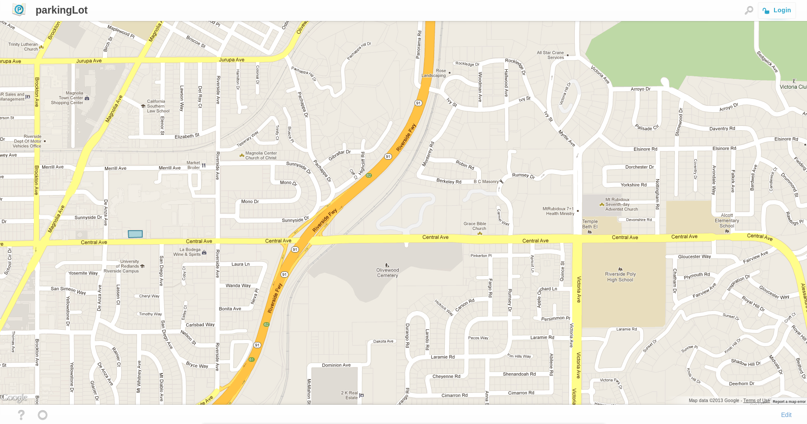

What is Parkinglot.io
besides awesome?
ParkingLot.io is a nodejs application that lives on Nodejitsu. It is an app that you can find free parking spot near destinations.
Overview
what I will be talking about
- Backend Stack Highlights
- Frontend Stack
- Fontend Structuring
- Experience
Stack Highlights
NodeJS stack
NPM
Supereffinawesomesause package manager!
NPM makes it super easy to manage packages and to install them as well.
{
"name": "parkingLot",
"version": "0.6.14",
"dependencies": {
"express": "3.0.2",
"stylus": "latest",
"jade": "*",
"mangos": "0.1.3",
"connect-assets": "latest"
},
"engines": {
"node": "0.8.x"
}
}
This made it super easy for me to switch computers do fast deploys and compartmentalize code.
MongoDB
document based database system. Built in Geo Spatial Indexing. Fast reads. Easy to modify database entries.
Sample query
http://parkinglot.io/v0/locations.json?_=center&_$near=33.95417356...
{
"status":"active",
"center":{
"$near": [33.954173560850045,-117.38750917204857],
"$maxDistance":0.008
}
}
Frontend Stack
jQuery
- Stable, allot of cross browser support.
- Somewhat light framework.
- Easy to build small plugins
- Super Easy to use

Google Maps
Im a ninja at Google Maps API - so experience with maps may vary
Google maps api is settup to does allot of cool things right without much coding. Other Map apis are great I chose to use Google Maps Api because i already know it.
var Location = new google.maps.LatLng(lat, lng);
var options = {
zoom : 19,
center : Location,
mapTypeId: google.maps.MapTypeId.ROADMAP,
disableDefaultUI: true
};
var map = new google.maps.Map(document.getElementById(“map”), options);
Dealing with the Browser
Navigator
Not the browser!
There is two differnt methods in navigator.geolocation:navigator.geolocation.getCurrentLocation
navigator.geoLocation.watchPosition
For my purposes since I am mapping a user point to a map. I used watch Position
navigator.geoLocation.watchPosition(sure, nope, options);
Get Current Position has it use cases.
In raw form the data can be very innaccurate. Further processing can result in better results.
Local Storage
Use it, use it, use it
User Relevant data
If they inputed the data, and they might want to recall that data. Store it!>
Use JSON, to store Objects
localStorage.setItem(“recent_searchs”, JSON.stringify(searchs));
var searchs = JSON.parse(localStorage.getItem());
Frontend Structure
File Structure
Seperated
Everything is sperated into seperate files. Using connect-assets enables me to do this, but you can also do this by building the file.
What is in the files?
Components
-
Utilities
Component
Components are fully funtional elements on a page.
Components usualy contain
- A function to build component
- A function to add component to document
- A function to attach events
- A couple way to interface with outside code
var about = new Panel($(“body”), {content : “about me”}, 6); //build new panel with functioning close button
An example from other code
chrome.devtools.panels.create("Font Picker", "FontPicker.png", "Panel.html", function(panel) { ... });
Eg from Google Chrome Extension Docs
Utilities
A set of tools that allows components to interact with input or output easier, and a set of tools that are used amoung multiple components.
var Request = function(endpoint){
var that = this;
that.endpoint = endpoint;
that.request = function(method, q, callback){
$.ajax({
url : that.endpoint,
data : q,
type: method,
error: function(err){
callback(err, {});
},
success: function(res){
callback(null, res);
}
});
};
});
var locations = new Request(“/v0/locations.json”);
locations(“get”, {title : hello}, function(err, res){
if(err) throw err.message
else{
console.log(res);
}
})
Move Fast and Break Things
Keeping Interest in project
doing cool things with the project keeps my interest in the project. Keeps me pushing quality code to project and keep me satisfied with the progress of the project.
I try to deploy a new version everyday!
If your not refactoring
your doing it wrong
To assume that you did it right the first time and that you shouldnt change a thing is a bold assumption. It may take time away from interesting features but is completely nessisary.
The more you do it the better your application will run and the easier that code will be to read
Build it like everyone is watching
If you think your code is messy, others will too.
Clean your code up to a point where you can jump into a file you havent worked on in weeks and know exactly what is going on.
Use common conventions and try to leave comments, especially on complicated sections.
Questions?